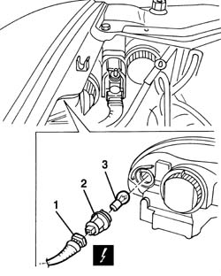

5550C18 bulb of one front turn signal, l/h or r/h - r+r
- Path
- Procedures > 55 ELECTRICAL EQUIPMENT > 5550 MANOEUVRING AND WARNING SIGNALS > 5550C turn signal/hazard warning lights > 5550C18 bulb of one front turn signal, l/h or r/h - r+r
- Kind
- repair procedure (removal / refitting; the operation number is the code)
- Applies to
- all engines; all production periods
- Interactive page
- https://sloeber94.github.io/elrnDB-a156/en/#/3238483
Applies to: engines: 1.9 JTD 16v; all production periods
 Removing
Removing
 Refitting
RefittingApplies to: engines: 1.9 JTD 16v; all production periods
1. Open the bonnet lid and disconnect the electrical connection of the indicator and front turn signal bulb.
 | Name | Connector |
|---|---|---|
1 | Left headlamp |
| Name | Connector |
|---|---|---|
1 | Right headlamp |
2. Turn the bulb holder anti-clockwise and remove.
3. Extract the bulb from the bulb holder. The bulb has a bayonet fitting.

Applies to: all engines; all production periods
Refitting
RemovingFit the bulb in the bulb holder.
Insert the bulb holder with the bulb in its housing and rotate it in a clockwise direction.
Connect the electrical connection to the bulb holder.
Check that the bulb is working.
Applies to: engines: 1.9 JTD 16v; all production periods
Topics linked from this page (4)
- 7025A12 Engine front sound insulation COVER - R.R.
- 7025A14 Bonnet LID - R.R.
- F10A Left headlamp ( FRONT )
- F11A Right headlamp ( ABS )